超高速溶接シミュレーションソフトウエア
理想化陽解法FEM
どのFEM解析ソフトよりも速く、溶接変形・残留応力を予測
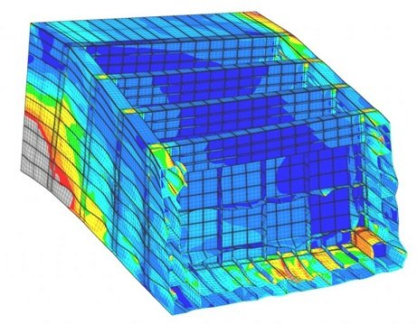
理想化陽解法FEMを用いることで、ありとあらゆる溶接解析が可能になります。
その解析事例の一例を紹介します。
溶接変形残留応力解析(高速・大規模解析)
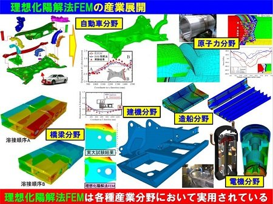 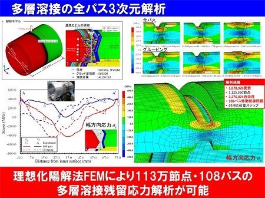
理想化陽解法FEM理想化陽解法FEMを用いた解析を用いると、超高速な解析が可能となるので、例えば100万要素50パスといった大規模熱弾塑性解析を1日程度で行うことができます。
・熱弾塑性解析
・熱弾塑性クリープ解析
・固有ひずみ解析
・固有変形解析
・熱伝導解析
・電場解析
・シェル-ソリッド混合解析
・振動解析
・動的解析
200パス以上の多パス溶接、多層溶接など、他のソルバーでは実行出来ない規模の解析に威力を発揮します。
・多パス溶接
・多層溶接
・肉盛り補修溶接
高速スポット溶接プロセス解析(ナゲット径評価、変形残留応力評価)
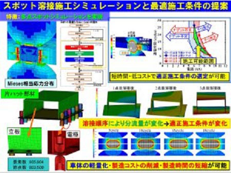
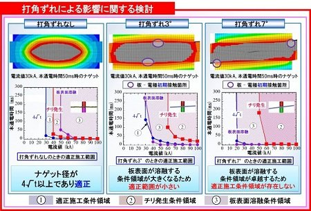
スポット溶接による適正施工条件(電流値、通電時間、等)の影響について検討する際には、電流場、温度場、変形場 の3者を連成させて解析する必要があります。その計算は非常に長時間かかるものですが、理想化陽解法FEMを用いることで、短時間のうちに解析することを可能にしました。この開発により、100点以上のスポットの解析スポット溶接における、ギャップ量や適正施工条件の算出が可能となりました。さらに、AI技術を併用することにより、100点以上のスポットの溶接順序の最適化や適正スポット施工条件の算出などに役立てることができます。
高温割れ解析(実機構造体)
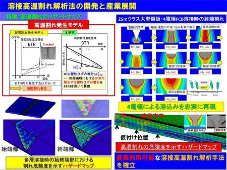
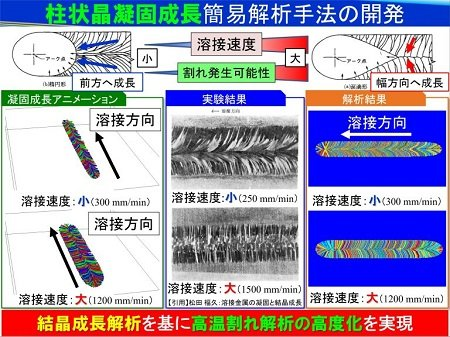
理想化陽解法FEMに対し、「BTR塑性ひずみ増分」を用いた高温割れ解析法を適用することで、実機規模の大規模構造における溶接高温割れ解析を実現しました。「BTR塑性ひずみ増分」は、柴原研究室が独自で提案している割れ評価指標であり、多くの論文発表をしているものになります。近年は、AI技術との併用により、高温割れが発生しない溶接条件を算出することにもでき、多くの産業分野で使用されております。さらに近年では、本手法を下記の高度な解析手法に発展させており、冶金学、力学の両面から割れ発生メカニズムの解明に役立てております。
・力学および冶金学的因子を考慮した溶接高温割れ解析
・柱状晶凝固成長簡易解析手法を用いた溶接凝固割れ解析
粒子法を用いたFSW解析
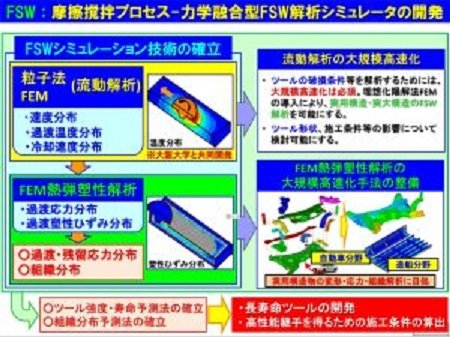
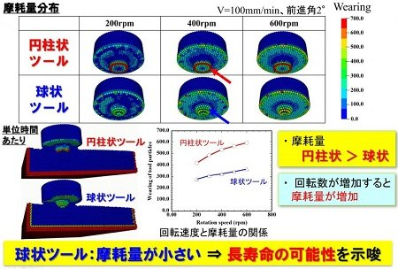
摩擦攪拌接合(FSW：Friction Stir Welding)では、溶接が不可能な異材間接合(鉄とアルミなど)が可能な次世代の接合技術です。その解析は、母材の流動状態を正確に特必要があるため、非常に難しい解析となります。本解析では、流動状態の解析を得意とする粒子法を用いることで、FSW時の温度分布、流動現象などを解析することができます。また、FEMと連成させて解析することで、ツールに発生する応力についても解析することができます。
高速Euler法を用いたFSW解析
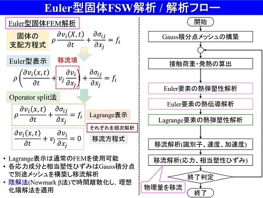
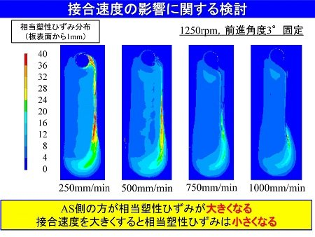
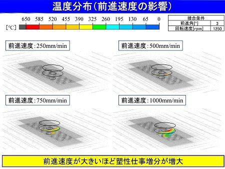
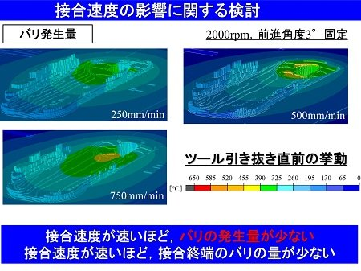
上記の粒子法のみでは、溶接時の過渡応力状態および残留応力状態を計算することは困難です。ここでは、理想化陽解法FEMの高速計算技術をベースにオイラー法(Euler法)を導入した新しい解析手法を生島研究室を中心に新たに開発し、FSW解析に対し適用を行っております。この解析手法を用いることで、ピアッシング接合(SPR：Self-Piercing Riveting)や溶接時の溶融池形状等の解析に適用を進めています。生島研究室が中心となり開発が進められております。
■3D金属積層造形解析(高速・大規模解析)
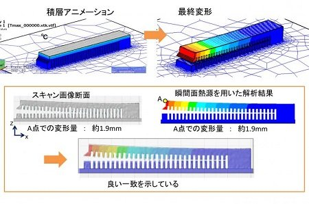
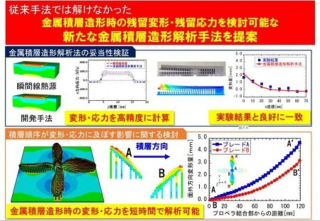
3D金属積層造形、いわゆる金属3Dプリンターは、パウダーベッド方式(PBF：Powder Bed Fusion)やレーザメタルデポジション方式(LMD：Laser Metal Deposition)方式など、様々な積層方式が提案されています。本解析手法では、理想化陽解法の超高速性を用いることで、レーザによる各パス積層時の変形や残留応力に及ぼす影響について検討することができます。さらに、AIと併用することで、応力や変形を低減する積層方法についても検討することができます。
損傷破壊力学モデルおよび延性き裂進展モデル解析
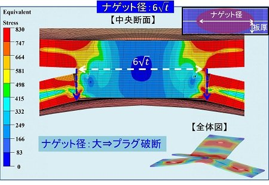
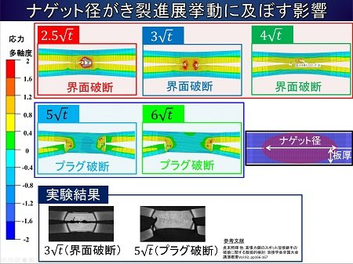
鋼材の破壊形態が、延性から脆性に切り変わるとき、構造物は急激に耐破壊性能を失うため、極めて注意が必要です。その破壊挙動の解析に用いることができるのがこの損傷破壊力学モデル(Gursonモデル等)や延性き裂進展モデルです。本手法を理想化陽解法FEMに導入する事で、実機規模のき裂発生・進展解析が可能となります。
・カップ＆コーンの解析が可能
・延性き裂⇒脆性き裂のシフト現象の解析が可能
・スポット溶接時の界面破断・プラグ破断のき裂進展解析(強度解析)が可能
高速熱弾塑性クリープ解析
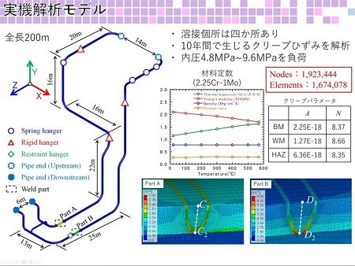
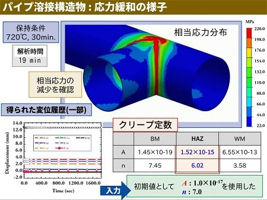
金属材料を高温にさらし続けると応力が緩和するとともに大きなクリープ変形が発生します。理想化陽解法を用いた高速熱弾塑性クリープ解析では、配管溶接部のみならず、実機規模の大規模配管の解析が可能となります。
変態塑性を考慮した溶接変形残留応力解析
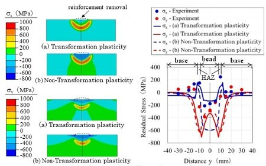
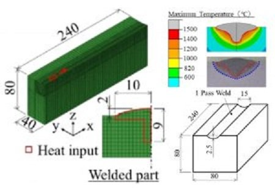
金属材料の種類によっては、変態塑性が溶接残留応力等に及ぼす影響が無視できない場合があります。理想化陽解法FEMでは、その変態膨張のみならず変態塑性を詳細にモデル化した解析が可能です。
ガス加熱・ひずみ取り解析
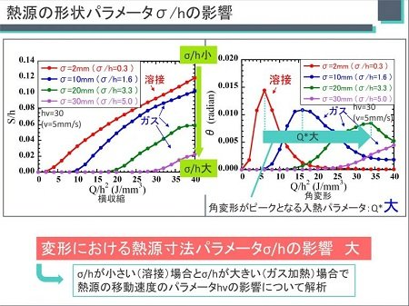
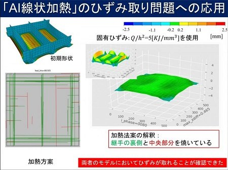
ガス加熱による「線状加熱時の熱変形」や「ひずみ取りによる熱変形」は、非線形現象が複雑に絡みあい、実機における変形結果とシミュレーション結果とを一致させることはかなり難しいです。その理由は、現象が最高到達温度の影響を大きく受けることに起因し、非常に細かい要素分割を必要とするからです。本解析手法では、理想化陽解法FEMを用いていることで、非常に細かい要素分割まで計算することができるため、高精度な変形解析を実現しています。
ガス・レーザ・プラズマ切断時の変形残留応力解析
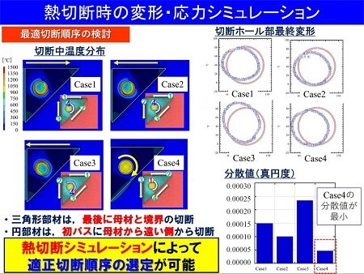
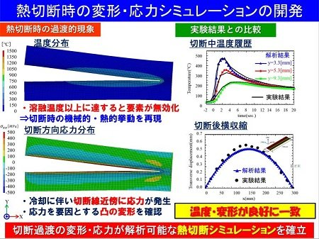
ガス・レーザ・プラズマ等の熱切断の解析においてカーフ形状に沿う形で溶融部が吹き飛ばされる。本解析手法は、そのメカニズムを組み込んだ手法です。本手法を用いることで、各種切断時における変形や残留応力などを解析することができます。
メッシュレス法を用いた熱伝導解析、熱弾塑性解析
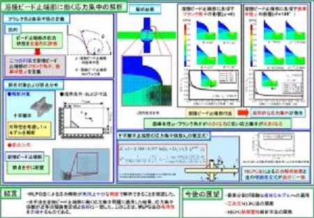
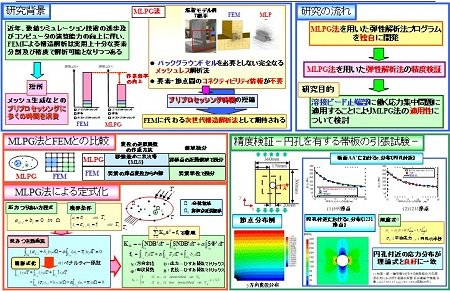
FEMを用いた解析においては、要素分割を必要とするため、3Dの複雑な構造の要素分割を行う際には困難を極める場合があります。その際に、役に立つのが、要素分割を必要とせず節点単位での解析を可能とするメッシュレス法です。当研究室では、MLPG法(Meshless local Petrov-Galerkin method)を採用しています。
AI線状加熱による任意形状作成、ひずみ取り解析
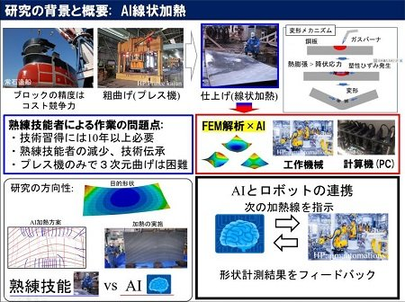
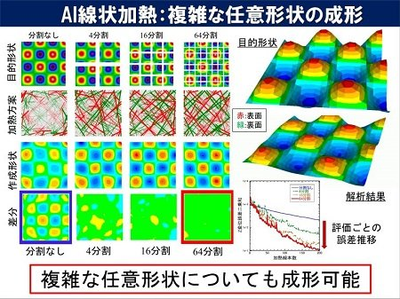
柴原研究室で開発した「AI線状加熱」システムを用いることで、板を任意形状に曲げるための加熱線を算出することができます。また、この方法を用いることで、曲がった板をフラットにするための加熱線を得ることもできます。
デジタルツイン解析
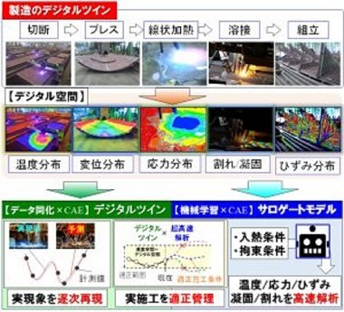
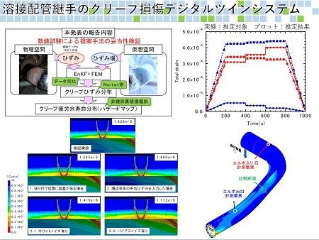
解析のみでは単なる予測に過ぎませんが、デジタルツインを用いると、センサーにより得られた測定結果と解析結果を同化してより実現象に近いシミュレーションが可能となります。柴原研究室で提案するデジタルツイン技術は、「理想化陽解法FEM」の高速解析特性を活用することにより始めてVirtualな空間とRealな空間を同化することができる画期的な手法です。
船体曲げねじり強度解析
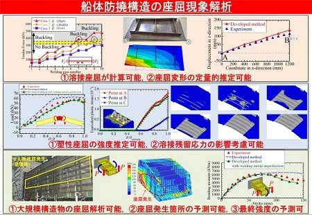
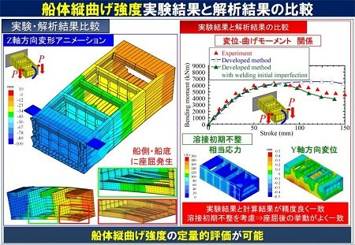
「理想化陽解法FEM」が得意とする大規模・高速解析機能、非線形解析機能により、
・溶接部の詳細な3D残留応力を考慮した弾塑性解析
・座屈強度解析
・接触解析
などが可能になるため、船体構造の詳細な最終強度解析が可能になります。生島研究室が中心となり開発が進められております。
3Dせん断加工(打抜き加工)解析
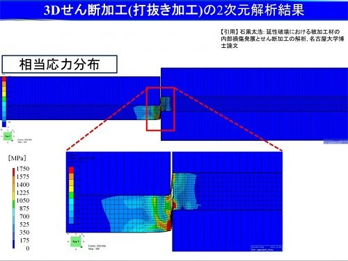
3Dせん断加工では、クリアランスや材料強度の影響、打ち抜き形状の影響によって、せん断面に「だれ」や「バリ」が出ることがあり問題となっております。その際の工具形状や加工条件について検討できるのがこの解析法になります。「だれ」や「バリ」を最小にする条件について検討することができます。また、金型に発生する応力やひずみについても検討することができるため、金型に対するダメージを最小化することも可能です。理想化陽解法FEMをベースとするこの解析法は、陰解法と同程度の精度を保持しつつ、超高速に解析ことができます。
プレス成形(塑性加工)解析
絞り加工や曲げ加工などの加工時における「しわ」や「割れ」などの問題が発生するか、スプリングバックがどの程度になるのかなどについて、金型を作る前に検討することができます。また、板材に残る残留応力の影響についても簡単に求めることができます。また、金型に発生する応力やひずみについても検討することができるため、金型に対するダメージを最小化することも可能です。
・冷間プレス
・熱間プレス
後述の相変態解析と連成させることで、簡単に「熱間プレス」を解析することもできます。理想化陽解法FEMをベースとするこの解析法は、陰解法と同程度の精度を保持しつつ、超高速に解析ことができます。
※大阪公立大学 柴原研究室HPより